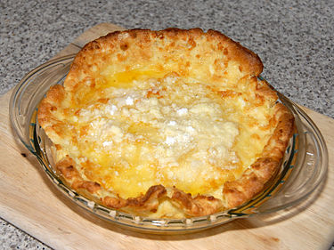
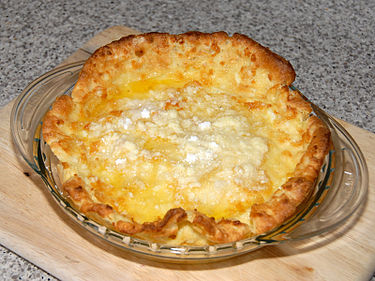

Recipes
Double Chocolate Cookies

Origin: Michigan
Source: Family Recipe
Category: Dessert
My daughter learned to make these cookies at a baking camp at Zingermanns and has tweaked the recipe to fit the taste buds of her siblings. They are extremely sugary so the salt helps to balance it. Note, these cookies are best eaten very quickly.
Recipe Ingredients
- Unsalted butter
- Granulated Sugar
- Packed light or dark brown sugar
- Large egg
- Pure vanilla extract
- Semi-sweet chocolate chunks (melted)
- All-purpose flour
- Natural unsweetened cocoa powder
- Baking soda
- Salt
- Semi-sweet chocolate chunks
Recipe Steps
- In a mixing bowl cream together the butter, granulated sugar, and brown sugar
- Add the egg and vanilla extract and beat well
- Add the melted chocolate
- In a separate bowl combine the flour, baking soda, cocoa powder and salt
- Combine the wet and dry ingredients
- Add the unmelted chocolate chunks.
- Form 15 cookies and place on a baking sheet.
- Cook for 12 to 13 minutes at 350 degrees.
Additional Food images


Dutch Baby Pancakes

Origin: Washington
Source: Self
Category: Main Dish
An eggy sweet pancake. Tastes and smells like nutmeg and sugar. Rises with heat and falls elsewhere. Is essentially a giant crepe.
Recipe Ingredients
- ½ cup flour
- ¼ cup sugar
- ⅛ teaspoon nutmeg
- 3 eggs
- ⅔ cup milk
- ¼ oil
Recipe Steps
- preheat oven to 425 degrees
- Put pan in oven with the oil
- Mix dry ingredients.
- Mix eggs and milk
- Mix all together
- Let it sit for ten minutes
- Put in oven for 14 minutes
- Enjoy
Additional Food images
 


Pesto Pasta

Pesto pasta has always been a comfort dish for me; it’s quick, it’s easy, and great food for a dinner party or a comfy night in! It requires six main ingredients, plus additional spices as you see fit. If you’re not in the mood for pasta, you can always eat the pesto sauce on bread, crackers, or eggs! This recipe makes enough for around 4 people, so adjust accordingly.
Recipe Ingredients
- 2 cups fresh basil leaves, packed (can add some spinach if you don't have enough basil leaves)
- ¾ cup freshly grated Parmesan or Romano cheese
- ½ cup extra virgin olive oil
- ⅓ cup pine nuts (can sub with same amount of chopped walnuts)
- 3 cloves garlic, minced
- Salt & pepper to taste
- 8 oz of your choice of pasta (my preferred is penne, but any type will work)
Recipe Steps
- Heat up water in a pot for the pasta and put in a teaspoon of salt.
- Pulse the basil and pine nuts in a food processor. Add a bit of olive oil as need be if the ingredients are too dry.
- Add the garlic and cheese to the food processor.
- Once water starts boiling in the pot, add pasta. Stir every couple of minutes.
- While the food processor is running, slowly pour in olive oil.
- Once pasta is al-dente, turn off the heat and drain the pasta water. Save some of it if you want your pesto to be slightly thinner.
- Add the pasta back into the pot, mix in the pesto, and voila!
Additional Food images